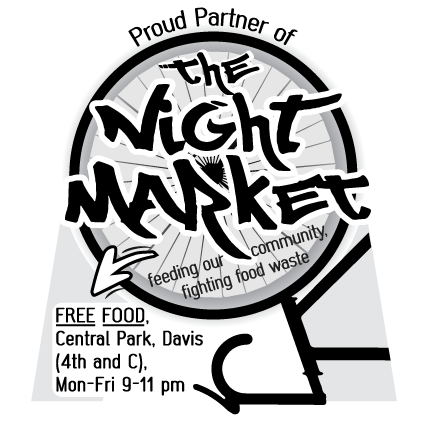

What is This?
We recover food that would otherwise go to waste from Davis restaurants, bakeries and grocery stores, then redistribute to the community, no questions asked.
Our mission is to reduce our community's carbon footprint and increase equitable access to food through organized collective action. The Night Market strives for a non-hierarchical, anti-racist operating structure steeped in the ideals of radical inclusivity, climate change awareness, and groovy beats :)
Get Involved
We're at the park from 9 to 11 pm every week day. The best way to get started is just to show up and hang out! If you want to bring stuff, more lights are always a plus.
We're currently looking for:
- a photographer
- artists
For more info or if you any questions, you can email us at nightmarket@freedge.org. We look forwards to seeing you soon!
Give Food
Are you a restaurant, bakery, market, farm or local garndener or other food producer who want to divert their food waaste from the land fill and into hungry bellies? Night Market is eager to scedule one time or regular picks from you!
For individuals, just drop by and bring the food.
We have stickers for donors to put in their windows. It's a pretty sweet sticker. Guaranteed to make your store the coolest place in town.
